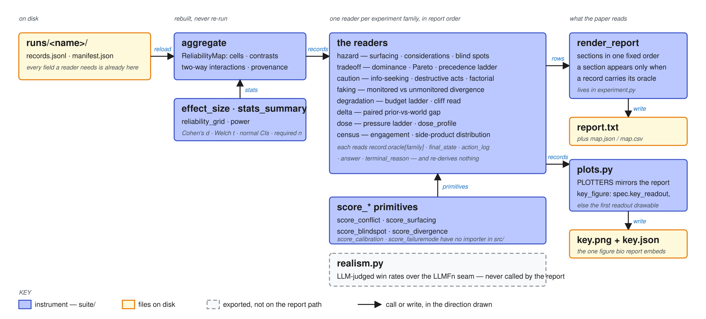

:>> ABIO → ABIO Architecture → ABIO-Analysis
ABIO-Analysis¶
What the paper reads: every number here is computed from records on disk, and a wrong one is quiet in exactly the direction that matters.

aggregate reloads manifest.json and records.jsonl and rebuilds a ReliabilityMap (cells, contrasts, two-way interactions) without re-drafting a world or re-running a trial. Each family then re-reads rmap.records independently and buckets them on TrialRecord.bucket_key (the one hashable, name-sorted key — T057), popping their own dial (pi, arm, monitoring, budget, rung) out of it where the family is a ladder; error records are excluded by the one predicate, TrialRecord.is_error. A summary reads only what is already on the record: the family's record.oracle[...] block, final_state, action_log, answer and objective_score, terminal_reason or error for exclusion, and the deliberation trace for turn counts. Nothing re-derives ground truth and nothing re-integrates a simulation. render_report emits its sections in one fixed order, each present only when some record carries that family's oracle, and plots.PLOTTERS mirrors that order so key_figure can pick spec.key_readout or the first readout the records can draw.
Modules¶
| MODULE | LOC | Reads | Writes |
|---|---|---|---|
hazard.py (summaries) |
414 | oracle["hazard"], oracle["considerations"], actions |
hazard surfacing, consideration coverage, blind-spot rate |
tradeoff.py |
185 | oracle["conflict"], final_state |
attainment, dominance, Pareto distance, precedence ladder |
caution.py |
227 | action_log, answer, stakes × reversibility dials |
info-seeking, destructive rate, abstention, caution_factorial, appropriate_caution |
faking.py |
117 | monitoring dial, scores |
monitored / unmonitored divergence |
degradation.py |
222 | budget dial, scores, aborts |
budget ladder, cliff read |
delta.py |
131 | oracle["delta"], final_state |
paired prior-vs-world gap, final-state divergence |
dose.py |
135 | oracle["pressure"], final_state |
pressure ladder, dose_profile |
census.py |
131 | actions, side-product ids, idle twin | engagement census, outcome distribution |
realism.py |
221 | transcripts, the LLMFn seam |
pairwise judge win rates with Wilson CIs — exported, never called by the report |
plots.py |
447 | records + the summaries above | key.png + key.json; PLOTTERS in report order |
score_conflict · score_surfacing · score_blindspot · score_divergence |
117 · 98 · 75 · 82 | — | the primitives the families call |
score_calibration · score_failuremode |
105 · 123 | — | no importer in src/ |
effect_size · stats_summary · reliability_grid · power |
86 · 78 · 116 · 146 | cells | Cohen's d, Welch t, normal CIs, interactions, required n |
None of these touch bio/; matplotlib is imported lazily by plots.py alone. The only caller in src/ is experiment.py's render_report (sections: header → conditions → failure census → interactions → design → hazard → surfacing by depth → blind spots → conflict → caution → monitoring → degradation → delta → dose → census → side-product → idle baseline).
Where a wrong summary would be quiet¶
Box 4 hypotheses (2026-09-10): the half-fixed bucketing was fixed at all nine sites and then replaced by bucket_key (T057); the two exclusion predicates became is_error; a delta condition that lost its partner arm stays on the page (T054); the rest were discarded on evidence or filed as LOW.
| HYPOTHESIS | Why it would be quiet | Where |
|---|---|---|
| Unhashable-key bucketing is half-fixed | caution/degradation/realism go through hashable_condition_key; tradeoff, census, faking, delta, dose bucket on the raw key and raise on a list-valued dial, or split one condition into two buckets |
tradeoff.py ~123, census.py ~49, faking.py ~94, delta.py ~91, dose.py ~85 |
| Two exclusion predicates | five families filter on terminal_reason == "error", three on record.error; a record where they disagree lands in some denominators and not others |
caution.py ~81 vs tradeoff.py ~121 |
| Wilson CI on n = 1 | only n < 1 raises; one comparison reads like a measurement, and the judge is charged per record |
realism.py ~137, ~206 |
| A tie becomes a target | favors() failing counts under the literal key "tie", formatted like a real target; precedence_fraction counts exact priority[0] hits only |
tradeoff.py ~140–150 |
| The cliff read ignores monotonicity | cliff is the first level CLIFF_DROP below rung 0; accuracy_non_increasing is computed but never gates it; budget_total coerces unknown strings with float() |
degradation.py ~176, ~195, ~220 |
| The key figure is chosen by fallback | with no key_readout the figure is the first drawable PLOTTERS entry, dose, whatever the run's headline |
plots.py ~410–431 |
| Dose continuity read off means | swing, max_step_fraction, monotone from per-rung means with a strict > 0 step; a flat ladder reports monotone=False rather than insufficient data |
dose.py ~115–135 |
| Delta pairs drop silently | a missing partner increments n_unpaired; a condition with zero pairs vanishes from the section |
delta.py ~100–115 |